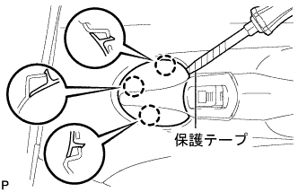
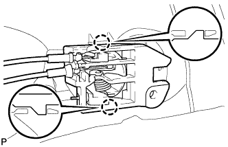
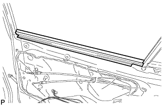
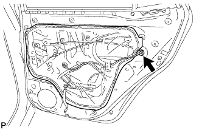
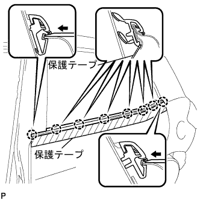

Rear Door Belt Moulding Assembly LH Removal |
| 1. Remove Rear Door Inside Handle Bezel LH |
 |
Using a screwdriver with its tip wrapped in protective tape, disengage the 3 claws and remove the rear door inside handle bezel RH.
| 2. Remove Door Assist Grip Cover LH |
 |
Using a screwdriver with its tip wrapped in protective tape, disengage the 4 claws and remove the door assist grip cover RH.
| 3. Remove Rear Door Trim Board Sub-assembly LH |
 |
Remove the 3 screws.
 |
Using a clip remover, disengage the 9 clips.
Disengage the 3 claws and disconnect the rear door trim board RH from the rear door glass weatherstrip inner RH.
 |
Disengage the 2 claws and remove the rear door trim board RH from the rear door inside handle RH.
Disconnect the connector.
| 4. Remove Rear Door Inside Handle Sub-assembly LH |
 |
Disconnect the rear door lock remote control cable RH and rear door inside locking cable RH, and remove the rear inside handle RH.
| 5. Remove Rear Door Glass Weatherstrip Inner LH |
 |
Remove the rear door glass weatherstrip inner RH from the rear door panel.
| 6. Remove Rear Door Service Hole Cover LH |
 |
Disconnect the connector.
Remove the rear door service hole cover RH.
| 7. Remove Rear Door Glass Run LH |
 |
Remove the rear door glass run RH.
| 8. Remove Rear Door Window Division Bar Sub-assembly LH |
 |
Remove the screw and 2 bolts, and remove the rear door window division bar RH.
| 9. Remove Rear Door Quarter Window Glass LH |
 |
Pull the rear door quarter window glass RH toward the front of the vehicle, and remove it together with the rear door quarter window weatherstrip RH.
Remove the rear door quarter window glass RH from the rear door quarter window weatherstrip RH.
| 10. Remove Rear Door Glass Sub-assembly LH |
 |
Slide the rear door glass RH toward the rear of the rear door and remove it from the rear door window regulator RH.
| 11. Remove Rear Door Belt Moulding Assembly LH |
 |
Apply protective tape to the body surface below the rear door belt moulding assembly LH.
Using a screwdriver with its tip wrapped in protective tape, disengage the 8 claws from the inside of the door and remove the rear door belt moulding assembly LH.